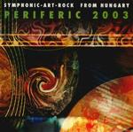

| Artist: | Various Artists |
| Title: | Symphonic-art-rock From Hungary 2003 |
| Label: | Periferic BGCD 118 |
| Length(s): | 57 minutes |
| Year(s) of release: | 2003 |
| Month of review: | [03/2003] |
| 1) | Fugato - Neander-variations I-II | 8.48 |
| 2) | Musical Witchcraft - Utopia From The City | 5.07 |
| 3) | Ivan Folk - Cheater | 5.23 |
| 4) | Heju - Lost Ways | 3.57 |
| 5) | Holy Lamb - Markhatram And The Low Brotherhood I-II-III | 5.40 |
| 6) | Janos Varga Project - The Released Spirit | 6.00 |
| 7) | Eclipse - Pictures Of A City (King Crimson) | 5.42 |
| 8) | Mindflowers - Why Not? | 5.07 |
| 9) | Holnap Inkabb - Without Harmony | 6.11 |
| 10) | D Sound - Blues 2000 | 4.40 |
Musical Witchcraft is the name of Solaris flute player Attila Kollar's solo project. This track is very much flute directed, with gentle guitar and percussive support. Sort of folky, and a bit poppy, even.
Cheater is led by the alternation of acoustic and electric guitars. Like the tracks before, this is pretty melodic and gentle, laid back, really.
Lost Ways is a pretty much Tangerine Dream mid eighties track: sequencers with a gentle melody played across.
Holy Lamb's effort starts an acoustic poprock track, but develops into something more theatrical, sort of reminiscent of mid seventies Genesis. If you consider the number of changes of scenery, it would almost seem that the band is trying to fit a Supper's Ready into 6 minutes. Still, the most interesting track so far.
The Released Spirit is of the second Janos Varga Project album, and blends in nicely with the style of its predecessor: guitar directed, with some synth in support. Riffs are a bit jazzy, the keys a bit frantic, the drums a bit choppy, making this sort of sound like a power trio.
Eclipse make an interesting choice in covering KC's Pictures Of The City. And their rendition is pretty okay, being a bit more guitar ridden. The building of tension from the middle section on is done pretty nicely, I'd have to say. Worthwhile redo of this one.
Why Not? starts out pretty spunky, but as the initials die down, things a get a little too gentle for my tastes. From this they start building tension in a King Crimson way (to the point of quoting). This track seems to fall short in the general direction area, making it sound a little too much like a bit of guitar practice (sometimes referred to as a jam). Not bad, not good either.
Without Harmony is the third track seemingly echoing King Crimson, although KC disappears immediately after the guitar intro. The rest of the track is melodic on keys and guitar. Too non committal for my tastes.
Closer D Sound produces one of only two vocal tracks (Pictures of a City being the other), the only in Hungarian. Despite being as gentle as ones before, it does make a more complete impression. Pretty nice closer, and one of the better tracks.